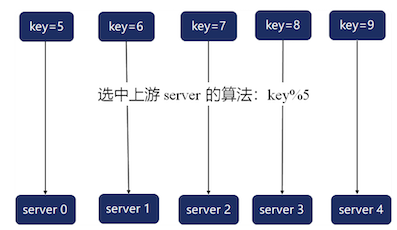
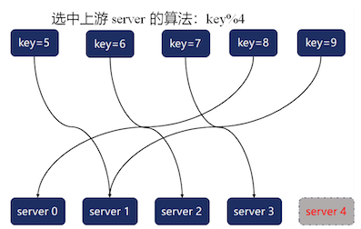
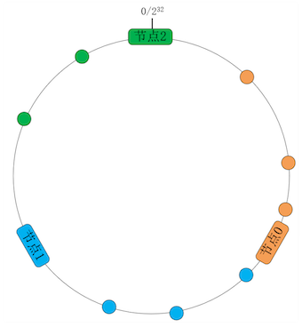
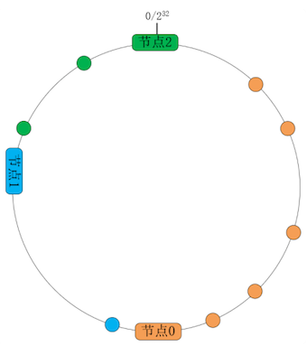
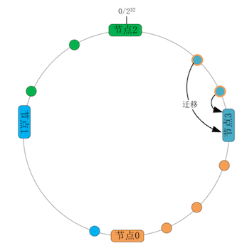
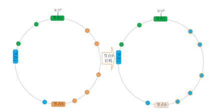
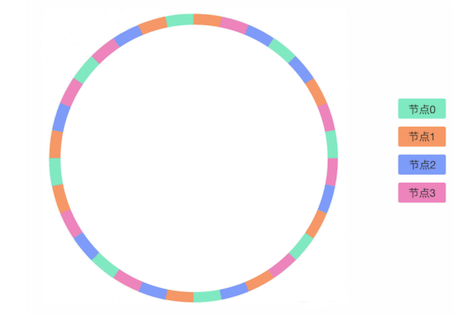

第六节 一致性哈希的均衡负载
使用哈希算法扩展系统时，最大的问题在于代表哈希桶的服务器节点数发生变化时，哈希函数就改变了，数据与节点间的映射关系自然发生了变化，结果大量数据就得在服务器间迁移。
特别是含有多份冗余数据的系统，迁移工作量更是会成倍提高。
为了在整体上更加充分地使用 IT 资源，我们必须解决分布式系统扩展时可能出现的两个问题：数据分布不均衡和访问量不均衡。
比如，对于包含 10 个服务器节点、持久化 1 亿条用户数据的有状态服务，如果采用关键字模 10（key%10）的哈希算法作为路由策略，就很难保证每个节点处理 1 千万条数据，那些可能还未达到一半设计容量的节点会浪费大量磁盘空间。
即使节点间存储的数据非常均匀，但这些数据间的活跃程度也不相同，存放热点数据较多的节点访问量非常大，很容易率先达到 CPU 瓶颈，在许多主机节点还很空闲时，我们就得扩容系统。
1、如何减少扩容、缩容时迁移的数据量？
在主机硬件达到性能瓶颈后，有状态服务可以沿 AKF 立方体 Z 轴，基于哈希算法扩展为分布式系统。
系统中拥有 5 个节点，哈希算法将每条数据的关键字模 5 得出的数字作为哈希桶序号，从而将数据映射到节点上（如果关键字是字符串或者其他结构化数据，可以先通过其他哈希算法转换为整数，再进行模运算）

然而，取模哈希函数中基数的变化，往往会导致绝大部分映射关系改变，比如上例中的 5 个关键字，在下图中集群节点数（即基数）从 5 降为 4 时，原映射关系全部失效，这 5 条数据都得迁移到其他节点：

1997 年发布的《Consistent Hashing and Random Trees》论文提出了一致性哈希算法，可以大幅度减少数据迁移量。一致性哈希算法是通过以下 2 个步骤来建立数据与主机节点间映射关系的：
- 先，将关键字经由通用的哈希函数映射为 32 位整型哈希值。这些哈希值会形成 1 个环，最大的数字
2^32相当于 0。 -
其次，设集群节点数为 N，将哈希环由小至大分成 N 段，每个主机节点处理哈希值落在该段内的数据。比如下图中，当节点数 N 等于 3 且均匀地分段时，
-
节点 0 处理哈希值在
[0, 1/3∗2^32]范围内的关键字， - 节点 1 处理
[1/3∗2^32, 2/3∗2^32]范围内的关键字， - 节点 2 则处理的范围是
[2/3∗2^32, 2^32]：

当然，在生产环境中主机节点很可能是异构的，所以我们要给高规格的服务器节点赋予更高的权重。一致性哈希算法改变节点的权重非常简单，只需要给每个节点分配更大的弧长即可。
例如，如果上图中的节点 0 拥有更高的硬件配置，那么可以将原本均匀分布的 3 个节点调整为 2:1:1 的权重
- 这样节点 0 处理的哈希值范围调整为
[0, 2^31]， - 节点 1 的处理范围调整为
[2^31, 3∗2^30]， - 节点 2 的处理范围调整为
[3∗2^30, 2^32]
如下图所示：

而扩容、缩容时，虽然节点数发生了变化，但只要小幅度调整环上各节点的位置，就不会导致大量数据的迁移。
比如下图中我们将 3 个节点的集群扩容为 4 个节点，只需要将节点 0 上一半的数据迁移至节点 3 即可，其他节点不受影响：

接下来我们从成本上分析下一致性哈希算法的优劣。
假设总数据条数为 M，而节点个数为 N，先来看映射函数的时间复杂度。传统的哈希算法以 N 为基数执行取模运算，时间复杂度为 O(1)；
一致性哈希算法需要将关键字先转换为 32 位整型（这 1 步的时间复杂度也是 O(1)），再根据哈希环中各节点的处理范围，找到所属的节点。由于所有节点是有序排列的，所以采用二分法，可以在 O(logN) 时间复杂度内，完成关键字到节点位置的映射。
再来评估下数据的迁移规模。节点变化会导致传统哈希算法的映射结果不可控，最坏情况下所有数据都需要迁移，所以它的数据迁移规模是 O(M)；
对于一致性哈希算法，我们可以通过调整节点位置，任意设定迁移规模。在环中各节点均匀分布的情况下，数据迁移规模是 O(M/N)。
因此，一致性哈希算法的缺点是将映射函数的时间复杂度从 O(1)提高到了O(logN)，它的优点是将数据迁移规模从 O(M) 降低至 O(M/N)。
由于数据条数 M 远大于主机节点数 N，而且数据迁移的成本很大，所以一致性哈希算法更划算，它的适用场景也更广！
2、如何通过虚拟节点提高均衡度？
一致性哈希算法虽然降低了数据的迁移量，但却遗留了两个问题没有解决。
首先，如果映射后哈希环中的数字分布不均匀，就会导致各节点处理的数据不均衡，从而降低了系统的运行效率与性能。在无法找出分布规律时，我们也无法通过调整环中节点的权重，平衡各节点处理的数据量。
其次，容灾与扩容时，哈希环上的相邻节点容易受到过大影响。比如下图中，当节点 0 宕机后，根据一致性哈希算法的规则，其上数据应该全部迁移到相邻的节点 1 上，这样，节点 1 的数据量、访问量都会迅速增加 1 倍，一旦新增的压力超过了节点 1 的处理能力上限，就会导致节点 1 崩溃，进而形成雪崩式的连锁反应：

系统扩容时也面临着同样的问题，除非同时调整环中各节点的位置，否则扩容节点也只会减轻相邻节点的负载。
当数据存在多份冗余时，这两类问题会被进一步放大。
那如何提高均衡性呢？
在真实的数据节点与哈希环之间引入一个虚拟节点层，就可以解决上述问题。
例如下图中的集群含有 4 个节点，但我们并不直接将哈希环分为 4 份，而是将它均匀地分为 32 份并赋予 32 个虚拟节点，因此每个虚拟节点会处理 227 个哈希值，再将 32 个虚拟节点通过某个哈希函数（比如 CRC32）映射到 4 个真实节点上（比如图中 8 个绿色虚拟节点皆由同色的主机节点 0 处理）：

这样，如果图中绿色的节点 0 宕机，按照哈希环上数据的迁移规则，8 个绿色虚拟节点上的数据就会沿着顺时针方向，分别迁移至相邻的虚拟节点上，最终会迁移到真实节点 1（橙色）、节点 2（蓝色）、节点 3（水红色）上。所以，宕机节点上的数据会迁移到其他所有节点上。
扩容时也是一样的，通过虚拟节点环，新增节点可以分担现有全部节点的压力。至于虚拟节点为什么可以让数据的分布更均衡，这是因为在虚拟节点与真实节点间，又增加了一层哈希映射，哈希函数会将原本不均匀的数字进一步打散。
上图为了方便你理解，每个真实节点仅包含 8 个虚拟节点，这样能起到的均衡效果其实很有限。而在实际的工程中，虚拟节点的数量会大很多，比如 Nginx 的一致性哈希算法，每个权重为 1 的真实节点就含有160 个虚拟节点。
当然，有了虚拟节点后，为异构的服务器节点设置权重也更方便。只需要为权重高的真实节点，赋予更多的虚拟节点即可。注意，虚拟节点增多虽然会提升均衡性，但也会消耗更多的内存与计算力。
3、本节小结
传统哈希函数中，主机节点的变化会导致大量数据发生迁移。
一致性哈希算法将 32 位哈希值构成环，并将它分段赋予各节点，这样，扩容、缩容动作就只影响相邻节点，大幅度减少了数据迁移量。
一致性哈希算法虽然将数据的迁移量从 O(M) 降为 O(M/N)，却也将映射函数的时间复杂度从 O(1) 提高到 O(logN)，但由于节点数量 N 并不会很大，所以一致性哈希算法的性价比还是很高的。
当哈希值分布不均匀时，数据分布也不会均衡。在哈希环与真实节点间，添加虚拟节点层，可以通过新的哈希函数，分散不均匀的数据。每个真实节点含有的虚拟节点数越多，数据分布便会越均衡，但同时也会消耗更多的内存与计算力。
虚拟节点带来的最大优点，是宕机时由所有节点共同分担流量缺口，这避免了可能产生的雪崩效应。同时，扩容的新节点也会分流所有节点的压力，这也提升了系统整体资源的利用率。